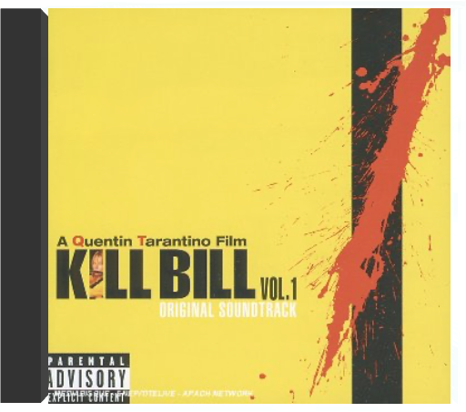

Limited numbered box set containing three double 180gm vinyl LP pressings. Over the 90-year history of sound film, there have been a handful of instances where a director and a composer have formed a longtime partnership that resulted in a series of classical scores, creating music that stands the test of time. None, however, have been as long or as fruitful as the 43- year collaboration of Steven Spielberg and John Williams. None have encompassed such a wide range of subject matter or, more significantly, have had such an enormous impact on worldwide popular culture. From the ominous shark signature of Jaws to the five-note alien greeting of Close Encounters of the Third Kind; from the heroic march of Raiders of the Lost Ark to the moving themes for Schindler's List. The music Williams has written for more than two dozen Spielberg projects has not only served them brilliantly but entered the wider public consciousness. With a record fifty Academy Award nominations (more than any other composer) Williams has demonstrated, again and again, his ability to connect with audiences, both in the movie theater and in the concert hall. Seventeen of those nominations, and three of Williams' five Oscar wins (Jaws, E.T. and Schindler s List) have been for Spielberg films. The sheer variety of music, the depth of compositional skill on display, the powerful emotions that it evokes, makes John Williams and Steven Spielberg: The Ultimate Collection an extraordinary accomplishment. The Spielberg-Williams Collaboration and Williams On Williams were released on CD in the early 1990s. Earlier this year The Spielberg/Williams Collaboration Part III was released on CD and digital platforms. This latest collaboration includes new recordings of selections from most of the Maestro's scores for the director since 1997. All three albums are now pressed on vinyl for the first time, as part of this special super deluxe box-set. Williams and Spielberg fans have been waiting a long time for this exclusive vinyl box for and now it's finally here. All audio has been exclusively mastered in the cutting room for the ultimate listening experience. This six vinyl LP deluxe box set has a gold foil finishing and contains an exclusive 16-page booklet with photos and liner notes. All three gatefold jackets are pressed on thick cardboard with matt finish and the 180 gram audiophile records are housed in anti-static polybags. 12 secret inscriptions are written in the run-out grooves of all sides. |  kill bill volumes 1 & 2kill bill Quentin Tarantino n'est pas seulement un cinéphile acharné devenu l'un des réalisateurs les plus talentueux de sa génération, propre à éclater les conventions du film noir avec Reservoir Dogs, Pulp Fiction puis Jackie Brown. C'est aussi un "metteur en musique" d'exception, à l'égal de Stanley Kubrick pour la musique classique. Son art se peaufinant au fur et à mesure de ses rares incursions derrière la caméra, le cinéaste turbulent cache un véritable orfèvre de la mise en scène, un génie visuel et narratif qui éclate littéralement dans Kill Bill, vol.1. Un film sensationnel de bout en bout, bourré de références qu'il s'approprie pour les éparpiller à la façon d'un puzzle en apparence foutraque mais en réalité proche de la perfection.  Mixture explosive de metal hardcore, d'indus, de grunge et de hip hop, la musique de Korn est une synthèse étonnante de toutes les tendances extrêmes du milieu des années 90. A la fois pesant et épileptique, baignant dans un flot de guitares distordues, truffé de brusques changements de rythmes et d'intensité, le néometal de Korn possède un pouvoir certain de fascination qui a vite propulsé le groupe vers le succès malgré son aspect anticommercial. La personnalité singulière des membres de ce combo américain et notamment de son chanteur flippé Jonathan Davis - tour à tour dépressif et furieux - y est également pour beaucoup. Ce premier album (le meilleur ?) contient déjà de nombreux moments forts ("Blind", "Clown", "Ball Tongue", "Faget"...) o๠révoltes, obsessions et frustrations sont expulsées avec une rage peu commune et un humour noir particulièrement grinçant. Du metal radicalement thérapeutique. — James Petit  Déjà auteur d'un premier album violent et remarqué en 1994, Korn n'a cessé de tourner pendant deux ans avant de réaliser l'incendiaire Life Is Peachy. Le monde entier a alors craqué pour le metal novateur et plein d'agressivité de ces Californiens. Aussi dynamique qu'un Rage Against The Machine, Korn joue sur des côtés plus torturés dus au caractère déjanté de son chanteur Jonathan Davis, qui alterne rage folle et relative sérénité. Le vigoureux "Adidas", premier tube de Korn, et le flamboyant "Twist" ne donnent qu'un avant- goût pimenté d'un disque très, très relevé. Une oeuvre radicale qui a depuis fait des adeptes. —Cyril Deluermoz  Que vous les adoriez ou que vous les détestiez, les Californiens de Korn sont à l'origine d'un nouveau mouvement musical qui allie un hip-hop très agressif aux riffs les plus violents du speed-metal. Dès ses débuts en 1994, Korn faisait des émules tels que Deftones, Snot, ou Limp Bizkit. En 1996, le gentil Life Is Peachy permettait aux élèves de rattraper leurs maîtres, ce qui expliquera peut-être l'inspiration et le soin avec lequel Follow The Leader sera produit. Au lieu de se mettre sur pilotage automatique, Korn varie ses recettes, expérimentant différentes ambiances et dynamiques tout en intensifiant les mélodies et les recherches sonores. "Got The Life" est un mélange séduisant de rythmes disco, de voix rappelant leur période Epic et de guitares étincelantes. "Children Of The Korn" chanté par un invité de marque, Ice Cube, est un rap très efficace à la puissante ligne de basse. Alors que la furie psychédélique de la musique commence à faire sombrer l'auditeur dans une transe hystérique, Korn, assisté de Fred Durst de Limp Bizkit, nous lâche l'hilarant "All In The Family" et nous démontre par là même que le groupe n'est pas qu'enragé. —Jon Wiederhorn |

Julien
Collection Total:
2 025 Items
2 025 Items
Last Updated:
Dec 25, 2023
Dec 25, 2023


 Made with Delicious Library
Made with Delicious Library